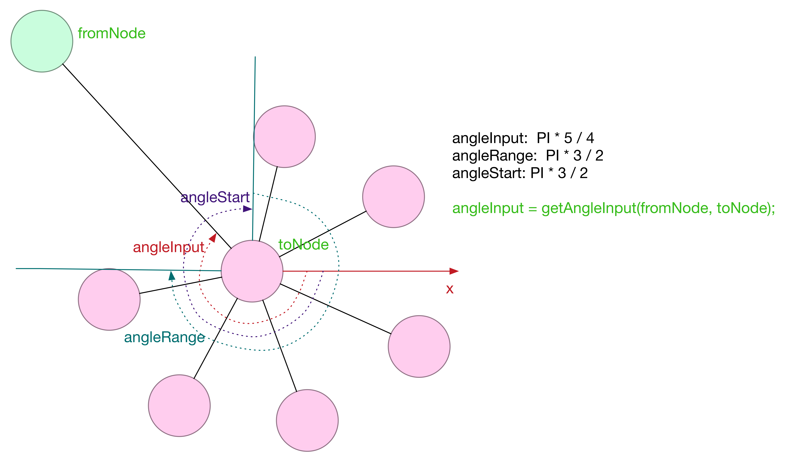

网络拓扑图布局算法研究2，续
graph layout
新节点的特点是x, y, size未设置确定的值，但不是undefined。
function createRawGraphData(
nodeCount
, edgeCount
, existedNodes
){
var graph = {nodes: [], edges: []}
, nodeIds = []
, len1, len2
, idSeed = 100000
, existedNodes = existedNodes || []
, _nodes = []
;
for(var i=0; i<nodeCount; i++){
var id = 'n' + idSeed++;
nodeIds.push(id);
graph.nodes.push({
id: id
, label: id
, x: null
, y: null
, size: 10
// , color: fly.randomColor()
, color: '#ff7f0e'
});
}
_nodes = _nodes.concat(graph.nodes, existedNodes);
len1 = graph.nodes.length;
len2 = _nodes.length;
for(i=0; i<edgeCount; i++){
id = 'e' + idSeed++;
graph.edges.push({
id: id
, source: graph.nodes[len1 * Math.random() | 0].id
, target: _nodes[len2 * Math.random() | 0].id
, color: '#cedb9c'
, hoverColor: '#c00'
});
}
return graph;
} incLayoutGrid()：矩阵增量布局，或者叫做网格增量布局。需提供参数：
nodes：原有节点数组newNodes：新增节点数组。新节点需要确保x, y字段存在，即使其值是nullselectedNodes：选中节点数组。新增节点初始会出现在选中节点的中心处。options：其他选项，同getGridLayout()方法的options算法实现如下：
sigma.utils.incLayoutGrid
= function(nodes, newNodes, selectedNodes, options){
if(!newNodes || !newNodes.length
|| !nodes || !nodes.length){
return;
}
var opt = options || {}
, rect
, newCenter
, newLen = newNodes.length
, newWidth = ( Math.ceil(Math.sqrt(newNodes.length)) - 1 ) * ( opt.space || 50 )
+ ( newNodes[0].size || + 20 )
+ ( newLen < 2 ? ( opt.space || 50 ) : 0 )
, gnr = sigma.utils.getNodesRect
;
selectedNodes = selectedNodes || [];
if(!selectedNodes.length){
selectedNodes = nodes;
}
rect = gnr(nodes, opt);
newCenter = {
x: rect.x + rect.w + newWidth
, y: rect.y + rect.h / 3
};
rect = gnr(selectedNodes, opt);
// from selected nodes' center point
newNodes.forEach(function(node){
node.x = rect.x + rect.w / 2;
node.y = rect.y + rect.h / 2;
});
// prepare for the next animation
nodes.forEach(function(node){
node.grid_x = node.x;
node.grid_y = node.y;
});
opt.center = newCenter;
sigma.utils.getGridLayout(newNodes, opt);
};
sigma.prototype.incLayoutGrid = function(
newNodes, selectedNodes, options) {
var me = this
, nodes = me.graph.nodes()
;
sigma.utils.incLayoutGrid(
nodes
, newNodes
, selectedNodes
, options
);
return me;
}; (function(){
var s = fly.createShow('#test_10');
var g1 = getRandomGraph(200, 200, 1);
var g1 = networkGraph_FR;
var g1 = networkGraph_ForceAtlas2;
var g1 = networkGraph0520_allEdges;
var g1 = networkGraph_grid_0521;
var g1 = networkGraph_tree_0521;
var g1 = networkGraph_2circles_0523;
var g1 = networkGraph_edges_between_the_same_level_nodes;
var g1 = networkGraph_edges_between_the_same_level_nodes_2;
var g1 = networkGraph_many_children_0526;
var containerId = 'test_10_graph';
var rendererSettings = {
// captors settings
doubleClickEnabled: true
, mouseWheelEnabled: false
// rescale settings
, minEdgeSize: 0.5
, maxEdgeSize: 1
, minNodeSize: 1
, maxNodeSize: 5
// renderer settings
, edgeHoverColor: fly.randomColor()
, edgeHoverSizeRatio: 1
, edgeHoverExtremities: true
, drawLabels: false
};
var sigmaSettings = {
// rescale settings
sideMargin: 10
// instance global settings
, enableEdgeHovering: true
, edgeHoverPrecision: 5
};
var sm;
if((sm = isSigmaInstanceExisted(containerId))){
sm.kill();
};
sm = getUniqueSigmaInstance(
containerId
, {
settings: sigmaSettings
, graph: g1
, renderers: [
{
type: 'canvas'
, container: containerId
, settings: rendererSettings
}
]
}
);
sm.refresh();
setTimeout(function(){
var newData = createRawGraphData(
18
, 15
, sm.graph.nodes()
)
, newNodes = newData.nodes
, newEdges = newData.edges
;
function getRandomSelectedNodes(){
var _nodes = sm.graph.nodes()
, len = _nodes.length
, retNodes = []
;
_nodes.forEach(function(_node){
if(Math.random() > 0.8){
_node.color = '#f00';
retNodes.push(_node);
}
});
return retNodes;
}
sm.incLayoutGrid(
newNodes
, getRandomSelectedNodes()
, {
space: 10
}
)
;
newNodes.forEach(function(node){
sm.graph.addNode(node);
});
newEdges.forEach(function(edge){
sm.graph.addEdge(edge);
});
sm.refresh();
setTimeout(function(){
sigma.plugins.animate(
sm
, {
x: 'grid_x'
, y: 'grid_y'
}
, {
duration: 500
, onComplete: function(){
sm.graph.nodes().forEach(function(node){
delete node.grid_x;
delete node.grid_y;
});
}
}
);
}, 1000);
}, 1000);
})(); sigma.utils.interpolatesAngle
= function(
angleRange
, numOfFirstLevel
, levels
, angleStart
) {
var retArr = []
, angleStart = angleStart || 0
, numOfCurrentLevel
, anglesOfCurrentLevel
, stepOfCurrentLevel
, angleOffset
, i, j
;
for(i=0; i<levels; i++){
numOfCurrentLevel = ( i + 1 ) * numOfFirstLevel;
anglesOfCurrentLevel = [];
stepOfCurrentLevel = angleRange / numOfCurrentLevel;
angleOffset = stepOfCurrentLevel * ( i == 0 ? 0 : 0.5 );
angleOffset += angleStart;
retArr.push(anglesOfCurrentLevel);
for(j=0; j<numOfCurrentLevel; j++){
anglesOfCurrentLevel.push(
stepOfCurrentLevel * j + angleOffset
);
}
}
return retArr;
}; 参数示意图：
以下为实现代码：
sigma.utils.clustersNodes
= function(
nodes
, options
) {
var opt = options || {}
, root = opt.root || {x: 0, y: 0}
, len
, numOfFirstLevel
, clusterLevels
, angleRange = opt.angleRange || 2 * Math.PI
, radiusStep = opt.radiusStep || 100
, angleInput = opt.angleInput || 0
, angleStart = angleInput
, writePrefix = opt.writePrefix || ''
, randomRadius = opt.randomRadius
, radius = 0, _r
, i, j, k
, angles
, PI = Math.PI
, alen, mid, left, right
;
if(!nodes || !nodes.length){
return;
}
len = nodes.length;
numOfFirstLevel = opt.numOfFirstLevel || _getNumOfFirstLevel(len, 15, 1);
clusterLevels = _getClusterLevels(numOfFirstLevel, len);
if(angleRange < PI * 2){
angleStart = ( 2 * PI - angleRange ) / 2 + angleInput;
}
angles = sigma.utils.interpolatesAngle(
angleRange
, numOfFirstLevel
, clusterLevels
, angleStart
);
root[writePrefix + 'x'] = root.x;
root[writePrefix + 'y'] = root.y;
k = 0;
if(opt.centerFirst){
for(i=0; i<angles.length && k < len; i++){
radius += radiusStep;
alen = angles[i].length;
mid = Math.floor(alen / 2);
for(j=0; j<=mid && k<len; j++, k++){
_r = _getRadius(radius);
nodes[k][writePrefix + 'x'] = root.x + _r * Math.cos(angles[i][mid - j]);
nodes[k][writePrefix + 'y'] = root.y + _r * Math.sin(angles[i][mid - j]);
_r = _getRadius(radius);
if(k + 1 < len && mid + j < alen && j != 0){
k++;
nodes[k][writePrefix + 'x'] = root.x + _r * Math.cos(angles[i][mid + j]);
nodes[k][writePrefix + 'y'] = root.y + _r * Math.sin(angles[i][mid + j]);
}
}
}
}
else if(opt.sidesFirst){
for(i=0; i<angles.length && k < len; i++){
radius += radiusStep;
alen = angles[i].length;
mid = Math.floor(alen / 2);
for(j=0; j<=mid && k<len; j++, k++){
_r = _getRadius(radius);
left = j;
right = alen - 1 - j;
if(left > right) {
break;
}
nodes[k][writePrefix + 'x'] = root.x + _r * Math.cos(angles[i][left]);
nodes[k][writePrefix + 'y'] = root.y + _r * Math.sin(angles[i][left]);
if(k + 1 < len && left < right){
k++;
_r = _getRadius(radius);
nodes[k][writePrefix + 'x'] = root.x + _r * Math.cos(angles[i][right]);
nodes[k][writePrefix + 'y'] = root.y + _r * Math.sin(angles[i][right]);
}
}
}
}
else {
for(i=0; i<angles.length && k < len; i++){
radius += radiusStep;
alen = angles[i].length;
for(j=0; j<alen && k<len; j++, k++){
_r = _getRadius(radius);
nodes[k][writePrefix + 'x'] = root.x + _r * Math.cos(angles[i][j]);
nodes[k][writePrefix + 'y'] = root.y + _r * Math.sin(angles[i][j]);
}
}
}
function _getRadius(radius){
return radius
+ ( randomRadius ? 0.5 * radiusStep * Math.random() : 0 );
}
function _getClusterLevels(numOfFirstLevel, totalNum){
var i = 1
, step = numOfFirstLevel
, all = 0
;
do {
all += i * step;
i++;
}
while(all < totalNum);
return i - 1;
}
function _getNumOfFirstLevel(totalNum, max, min){
var max = max || 18
, min = min || 1
, i = 1
, t = 0
, m
;
while(1){
t += i;
m = Math.ceil(totalNum / t);
if(m >= min && m <= max){
return m;
}
i++;
}
}
}; getAngleInput(fromNode, toNode)：获取球形布局输入节点的角度。
sigma.utils.getAngleInput
= function(fromNode, toNode){
var dy = fromNode.y - toNode.y
, dx = fromNode.x - toNode.x
, angleInput
;
sin = dy / Math.sqrt(
Math.pow(dx, 2) + Math.pow(dy, 2)
);
cos = dx / Math.sqrt(
Math.pow(dx, 2) + Math.pow(dy, 2)
);
if( sin >= 0 ) {
angleInput = Math.acos(cos);
}
else {
angleInput = 2 * Math.PI - Math.acos(cos);
}
return angleInput;
}; (function(){
var s = fly.createShow('#test_30');
var g1 = getClusterGraph(20, {xMax: 200, yMax: 200, nodeSize: 10});
var root = g1.nodes[0];
var fromNode = {
id: 'n0'
, label: '0'
, x: 100
, y: 100
, size: 10
, cluster_x: 100
, cluster_y: 100
, color: fly.randomColor()
};
var g2 = {
nodes: [fromNode, root]
, edges: [{
id: 'e0'
, source: fromNode.id
, target: root.id
, color: '#ccc'
}]
};
var g3 = {
nodes: g1.nodes.slice(1)
, edges: g1.edges
};
var containerId = 'test_30_graph';
var rendererSettings = {
// captors settings
doubleClickEnabled: true
, mouseWheelEnabled: false
// rescale settings
, minEdgeSize: 0.5
, maxEdgeSize: 1
, minNodeSize: 1
, maxNodeSize: 5
// renderer settings
, edgeHoverColor: fly.randomColor()
, edgeHoverSizeRatio: 1
, edgeHoverExtremities: true
, drawLabels: false
};
var sigmaSettings = {
// rescale settings
sideMargin: 10
// instance global settings
, enableEdgeHovering: true
, edgeHoverPrecision: 5
, autoRescale: false
};
var sm;
if((sm = isSigmaInstanceExisted(containerId))){
sm.kill();
};
root.cluster_x = root.x;
root.cluster_y = root.y;
root.x = fromNode.x;
root.y = fromNode.y;
angleInput = sigma.utils.getAngleInput(
{x: root.x, y: root.y}
, {x: root.cluster_x, y: root.cluster_y}
);
sm = getUniqueSigmaInstance(
containerId
, {
settings: sigmaSettings
, graph: g2
, renderers: [
{
type: 'canvas'
, container: containerId
, settings: rendererSettings
}
]
}
);
sm.refresh();
sm.camera.goTo({
x: 100
, y: 100
});
sigma.plugins.animate(
sm
, {
x: 'cluster_x'
, y: 'cluster_y'
}
, {
duration: 500
, onComplete: function(){
root = sm.graph.nodes('n1');
g3.nodes.forEach(function(node){
node.x = root.x;
node.y = root.y;
});
sigma.utils.clustersNodes(
g3.nodes
, {
root: root
, angleRange: 3 * Math.PI / 2
// , numOfFirstLevel: 8
, radiusStep: 60
, randomRadius: 1
// , angleInput: 3 * Math.PI / 2
, angleInput: angleInput
, writePrefix: 'cluster_'
, centerFirst: 1
}
);
sm.graph
.read(g3)
;
sm.refresh();
setTimeout(function(){
sigma.plugins.animate(
sm
, {
x: 'cluster_x'
, y: 'cluster_y'
}
, {
duration: 500
}
);
}, 500);
}
}
);
})();